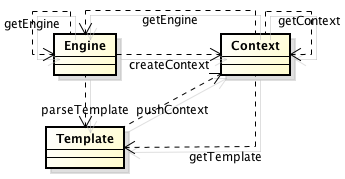
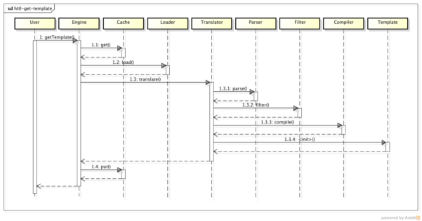
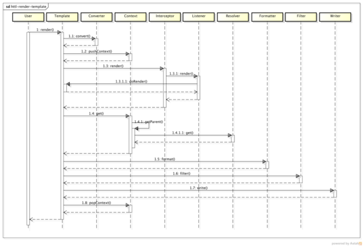
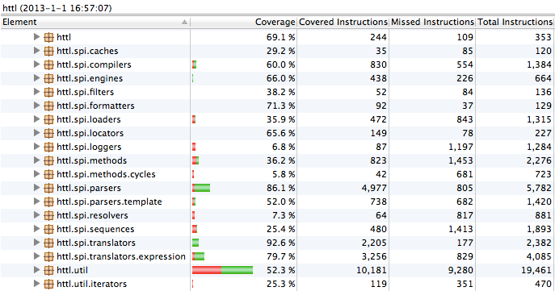

design
regardless of whether you use HTTL, are welcome to look at this design documents, you may find that there are some help, because the design concept is the same.
static view
model partitioning principle
by entity domains, service domain, session domain is divided.
No matter what you do aproduct, must be operated with a body, such as: service framework management Service, task management framework Task, Spring Management Bean, etc., which is the entity domain.
the likelihood that there is an operator, there must be an operator, which manages the life cycle by the operator to initiate actions, such as: The service framework ServiceInvoker,, task framework TaskScheduler, Spring of BeanFactory, etc., which is the service domain .
service domain initiate actions in the implementation process, there will be some temporary state exchange needs to be stored, for example: Invacation, Execution, Request, etc., which is session scoped.

Accordingly, in HTTL in:

- Engine as a service domain
-
It is the entrance
- API and is responsible for the entity domain Template lifecycle management, which is a single instance of Singleton, loaded immutable, it is thread-safe, its initialization process heavier, please reuse a single case.
- Template for the entity domain
- represented by the operator, it is the Prototype prototype instance, which generates an instance of each template, loaded immutable, it is also thread-safe, template changes, will produce different instances without changing the original instance .
- Context domain for the session
- held during operation all mutable state, it is the thread ThreadLocal instance, that does not compete with other threads to use, it is also thread-safe, please do not cross-thread passes, its initialization process is very lightweight, Each template is created before execution instance, executing the destruction.
advantage of this division, responsibilities clear, mutable state concentration, each field is non-locking thread-safe, guaranteed under the big concurrency, does not reduce the activity of the system.
these core domain model that is HTTL the API (Application Programming Interface), which is exposed to the user at least HTTL concept, which is above the first column in the class diagram.
extension point assembly principles
Press "micronucleus + plug-in" system assembly.
whenever there is a viable product, are designed for scalability quite good, because no product can cover all needs, especially for open-source software.
Therefore, only products with good scalability, allowing users or third parties involved, the second development, in order to maintain vitality.
how kind of extensibility is the best? Generally, any function that is not hard-coded, all functions can be replaced by the user.
So how can we do this? An important principle: equal treatment of third parties.
original author who is to achieve the function, but also a third party can not change the source code under the premise.
In other words, the original author should extend themselves as who add their own functions, but also with third-party extensions are the same way, rather than have a privilege.
To do this, you need a good framework for support, "micronucleus + plug-in" is a good choice, Eclipse, Maven, and other famous software using this system.

What is "micronucleus + plug-in"? Micronucleus, ie minimizing the core, the kernel is responsible only for plug-in assembly, without any functional logic, all functions can be replaced by the plug-in implementation,
and the assembly process should be based on uniform rules, for example based on setter injection, but not hard-coded assembly of different plug-ins, so you can ensure that no hard-coded in the kernel function.
example: Spring, OSGI, JMX, ServiceLoader micronuclei are all common containers, they are responsible for the assembly of uniform rules-based, but not with functional logic.
Of course, if you do not want with such a heavy frame, can also be self-fulfilling, HTTL on the use of self-realization httl.util.BeanFactory as assembling micronucleus.
in Engine.getEngine () calls the BeanFatory.createBean (Engine.class, properties),
which, properties is httl.properties configuration, BeanFatory setter-based recursive inject all of the object's properties.
example: httl.properties configured parser = httl.spi.parsers.CommentParser,
while DefaultEngine there setParser (Parser parser) method, it will be injected, and the property also Parser itself recursively injection.
If you need to extend or replace HTTL implementation, see: Extended integration
Since the non-functional plug-in assembly process can be accomplished by the micronucleus framework that functional assembly of how to do it?
we should put functional assembly process is also packaged as plug-ins, plug-ins that make big small plug assembly, the assembly forming cascade.

example, HTTL entrance is an instance of class Engine plug-in, which is responsible for the template cache, load, parse the total scheduling, ie you can replace DefaultEngine implementation.
simply httl.properties configure: engine = com.your.YourEngine, such as SPI can be injected into the existing Parser your Engine.
these plug-ins interface, which is HTTL the SPI (Service Provider Interface), which is exposed to expand HTTL's smallest granularity replacement unit, which is above the class diagram in the second column.
overall subcontracting principles
by multiplexing degree, abstraction, stability subcontracting.
- multiplexing degree:
- each user needs to use the class, that reuse the same particle size, for example: the user and the extender, which can reduce the code interference and maximize reuse.
- stability:
- packages and dependent packages are dependent on the proportion, if a package depends on a lot of packages, that it will lead to changes in other packages follow the changes, so it is unstable, whereas that is stable, Always be relied upon to maintain than those who rely on high stability, the formation of pyramid relationship instability which can prevent infection, such as a packet depends only three packets, and b package dependencies 10 pack, do not allow a package to rely on b package.
- abstraction:
- proportion of the number of abstract classes package, such as package has 10 categories, including three as an abstract class (including the interface), then the abstraction of 3/10 Maintaining stability and abstract package is proportional, that is an abstract class (including the interface) into a stable package, the concrete implementation class into unstable package, so they can keep each layer has sufficient scalability.
stability diagram with abstraction relationship is as follows:

that is subcontracting should be as follows:

above that which the package does not depend on other packages. So it is very stable, you should try to abstract class or interface in this layer,
while the following three packages that package depends, three pack changes will cause it to follow change, so it is unstable, should be placed on the concrete implementation class of this layer.
due to stability and abstraction is proportional, so the degree of instability and the abstract is inversely proportional to the inverse easy to use drawing, calculated as follows:
- (1) I = Ce / (Ca + Ce)
- I: Instability (instability)
- Ca: Afferent Coupling (incoming dependence, that is, the number being dependent on other packages)
- Ce: Efferent Coupling (output dependent, which is dependent on the number of other packages)
- (2) A = Na / Nc
- A: Abstractness (abstraction)
- Na: Number of abstract classes (abstract number)
- Nc: Number of classes (the number of categories, including abstract classes)
- (3) D = abs (1 - I - A) * sin (45)
- D: Distance (deviation)
- I: Instability (instability)
- A: Abstractness (abstraction)
deviation should be kept as small as possible, that is shown below the inverse intersection fall green line around:

Based on the above principles, HTTL package structure as a whole is divided into three layers: (corresponding to the above class diagram in three)
- API (Application Programming Interface)
- template engine user interface class dependent, but also where the core domain model, maintaining a minimum concept and hide implementation details, including the Engine class is equivalent to micro-kernel, only to manage the expansion of non-functional point of loading, not hard coded template parsing render any part of the load.
- SPI (Service Provider Interface)
- template engine extensions are dependent interface class, it relies on the API domain model, it is the function of orthogonal decomposition template engine abstraction layer to ensure that users can replace the need to rewrite the minimum granularity place to facilitate the secondary development.
- BUILT-IN (Built-in Implementation)
- built-in extension implementation, it is the SPI standard implementation, but also can be replaced by the user of the class, which contains all the engine to do, including the expansion of the assembly process between the points (replaceable DefaultEngine), to ensure that no functional change can not afford to that equal treatment Extender.
using sub packages depend parent package style, so the API in the root directory, SPI interface, independent sub-packages, the various implementations of SPI placed under a sub-package.
- user API to import: import httl. *;
- extended by SPI import: import httl.spi. *;
Below is HTTL instability of all packets with the ratio of abstraction matrix: (Below JDepend draw)

HTTL all core packages are close to the inverse line that identifies the image above a green dot, which means that subcontracting is reasonable.
Note: Figure in the black point of util-related packages that do not abstract, but was a lot of package dependencies, but internal reuse code, do not affect the overall design, users do not rely HTTL the util classes.
dynamic view
If you look at the code, you can from the entrance class Engine and DefaultEngine start, press the calling procedure tracking.
Get Template Process
 < / p>
Get Template Process Description: (The number corresponds to the figure above)
1 when viewed from the engine to get the template,
1.1 will first find out whether cached in the cache, the cache if there is a direct return,
1.2 If not, then load the template source files for the Resource object,
1.3 followed by the converter (compiled and interpreted into two kinds), the Resource converted into Template,
1.3.1 The first step is to convert the template parsed into an abstract syntax tree AST,
1.3.2 and filtered before compiling static text, such as deleting blank, etc.,
1.3.3 the parsed Java code is compiled to give specific template implementation class,
1.3.4 instantiate a template implementation class,
1.4 writes template instances into the cache, and returned to the user.
template rendering process
 < / p>
rendering process template Description: (The number corresponds to the figure above)
1 when the user invokes the template rendering method,
1.1 will be converted into a non-variable object Map Map, non Writer or OutputStream output object into a Writer or OutputStream,
1.2 Context of the variable Map pressed into the stack,
1.3 If there are interceptors, the actual rendering process packaged into Listener, pass interceptor perform,
1.3.1 interceptor interceptor logic executed after the call to intercept incoming Listener,
1.3.1.1 The Listener template doRender callback method performs the actual rendering process,
1.4 template variables are read from the Context,
1.4.1 If the current Context does not exist, then up a Context reads,
1.4.1.1 If you have a root-level Context, then the Resolver reads,
1.5 template output variable, the first through the Formatter, the value of the object into a String,
1.6 through Filter, misplaced output XML special characters such as a String,
1.7 Finally, the filtered String output,
1.8 template rendered after the end of the current Conetext pop up.
performance
performance comparison

performance test class: BenchmarkTest.java
| engine | template | thousands of times consuming | times per second |
| java | books.java | 8,739 ms | 11,442 / s |
| httl | books.httl | 9,608 ms | 10,407 / s |
| velocity | books.vm | 41,969 ms | 2,382 / s | freemarker | books.ftl | 56,192 ms | 1,779 / s |
| smarty4j | books.st | 65,855 ms | 1,518 / s |
Environment: os: Mac OS X 10.8.2, cpu: 2 x 1.70GHz, mem: 4G, jvm: 1.7.0_09 -> mem: 80M
HTTL speed close to the direct use of hard-coded Java output, other than the template engine an order of magnitude.
HTTL used the JDK Compiler, compile a class usually requires hundreds of milliseconds, compared to other template compilation is slower, but each template is only compiled once at load time.
above test, does not contain HTTL at compile static text into byte [], to reduce duplication transcoded output optimization. Ignore the output used in all the way to test, test template engine is pure rendering time, otherwise HTTL will be faster. If you want to test the optimal entry can not be ignored when the output encoding overhead, otherwise it will be unfair.
addition, HTTL default opened EscapeXmlFilter, while the other template engines do not, to be fair, the performance test configurations closed Filter:
value.filter = null
Note: Different environments may differ from the results of running the above test data for reference only, you can perform a test on your own machine:
git clone https://github.com/httl/httl-benchmark.git cd httl-benchmark mvn test-Dtest = httl.test.BenchmarkTest-Dcount = 10000
execution results as:
Running httl.test.BenchmarkTest
==================== Test environment =====================
os: Mac OS X 10.8.2 x86_64, cpu: 4 cores, jvm: 1.6.0_37,
mem: max: 505M, total: 125M, free: 110M, use: 15M
==================== Test parameters ======================
count: 10000, warm: 100, list: 100, stream: false,
engines: java, httl, velocity, freemarker, smarty4j, beetl
==================== Test result ==========================
engine, time, tps, rate,
java, 690ms, 14492 / s, 100%,
httl, 785ms, 12738 / s, 87%,
velocity, 3828ms, 2612 / s, 18%,
freemarker, 6489ms, 1541 / s, 10%,
smarty4j, 6181ms, 1617 / s, 11%,
beetl, 9642ms, 1037 / s, 7%,
================================================== =======
optimization strategy
strongly typed compile
strongly typed compiled and derived association type
expression $ {user.name} for compilation:
weakly typed bytecode generation:
Object user = context.get ("user"); / / user is unable to determine Map or POJO
/ / Reflection to obtain property value, but also to run judge user.getName (), or user.name field
Object name = ReflectUtil.get (user, "name"); / / Then the name should reflect
HTTL strongly typed bytecode generation:
User user = (User) context.get ("user"); / / By declared type
/ / Determined at compile time using the getName () method to get the value of the property, and through getUser () return type deduction type of name
String name = user.getName ();
precompiled byte stream
compiled compiled into byte text will accelerate output
text translation:
writer.write ("| ");
writer.write (user.getName ());
compiled binary: private static final byte [] _B1_ = new byte [] {60, 116, 97, 98, 108, 101, 62, 60, 116, 114, 62, 60, 116, 100, 62};
output.write (_B1_);
output.write (user.getName (). getBytes ());
This can greatly reduce the IO output through the character set encoding of the text into a binary stream velocity, or a million times the page is rendered, the above static text will be encoded one hundred million times. HTTL simultaneously generates two default templates for each class, in the user when an incoming OutputStream and Writer, perform different class: template.render (paramaters, outputStream); / / internal version will perform binary output Template class template.render (paramaters, writer); / / text output will be performed within the Template class version local local variablesassignment generated for local variables, do not put back parameter map example will:
$ {Price}
compiled: int price = price * discount / 100; write (price); instead: context.put ("price", price * discount / 100);
write (context.get ("price"));
this parameter map can significantly reduce the put and get calls, reducing hash lookup time. bytecode does not contain the stringthe text is not compiled into bytecode, reducing memory perm area occupied, and to prevent JIT failure When the contents of the template is large, will lead to the generated bytecode is relatively large, the runtime bytecode in memory perm area, leading to perm area is too large. Template for a long time, the user may need to continue to transfer large perm area: java-XX: PermSize = 256MB-XX: MaxPermSize = 256MB addition, SunJDK larger than 8K byte code default method without JIT optimization, our regular open JVM is mixed mode, That a large quantity of calls will be JIT compiled to native code running and other interpretive execution within the JVM, interpreted and compiled execution speed difference of 10 times. See the JVM: globals.hpp product (bool, DontCompileHugeMethods, true, "Don't compile methods> HugeMethodLimit") develop (intx, HugeMethodLimit, 8000, "Don't compile methods larger than this if + DontCompileHugeMethods") through the text is not compiled into bytecode, reducing memory perm area occupied JIT failure can be prevented. will: / / If the string has more than 8K, it will lead to the generation of more than 8K byte code
writer.write ("... A Large String ...");
changed: / / in the generated byte code before the contents of the text saved to a Map cache,
/ / In the generated class is loaded, the class static field values are read from the cache and delete the cache,
/ / This text content from the bytecode stored Perm region, go to the constant object storage Old District,
/ / Because it is a static field, so it will not affect the template execution performance.
private static final String _TXT1_ = StringCache.getAndRemove ("1");
writer.write (_TXT1_);
fast text processingreduce reflection calls, unwanted locks, basic types of packing, and text processing. reflex is often performance bottlenecks, HTTL reflection of all local calls are very careful For example: Since int [] is not inherited from Object [], for general purpose processing, instead Array.get (array, index) to get an array of items, Resulting in the Profiler analysis, found that 80% of the CPU time is spent in Array.get () on. because the template is basically a large number of output types and strings, HTTL encounter any similar needs boxed and unboxed place All basic types are overloaded methods in order to reduce the processing boxed and unboxed. For example: When the output of basic types, you need to turn into a String, if you use format (Object) interfaces, they will be basic types of packing. JDK6 added Biased Locking optimization is a cost and instability, So the program is useless locks that may affect performance, HTTL JDK will take the initiative to avoid the useless lock, For example: override method to remove Writer, ByteArrayOutputStream other locks. text processing performance bottleneck is often the place, HTTL culmination of careful handling text. For example: regex greedy, StringBuilder expansion led to an array of copying, no replacement filter string not append operation. so. All the details that affect performance, sustained attention and optimization. Qualitystrictly to ensure quality, ease of use, HTTL done before the release:
unit testunit test coverage: (Analysis Tool EclEmma)  HTTL for all syntax, commands, functions, has a corresponding template tested, see: https://github.com/httl/httl/tree / master / httl / src / test / resources / comment / templates FindBugs detectorFindBugs has passed the latest version (2.0.2) detection, zero discovery. See also: FindBugs can find problems JDepend detectionJDepend detection test has passed, acyclic dependence, stability and level of abstraction than normal. stability testrepeat in the long run all unit tests, CPU remained stable: (Analysis Tool JVisualVM) memory is also stable to YoungGC based: Although HTTL heavy use bytecode generation to improve performance, but because there are whole amount of cache, Perm region is stable: set of memory because only 500M, while the conventional accounted for more than 400 M, in OLD area almost to full case, it occurs only three times FullGC: (Analysis Tool jstat) Dump after the data from the following can be seen, JDK compiler takes up 171M of memory. If you turn-Xlint: unchecked compiler arguments will be greater. If you think JdkCompiler take up too much memory, you can also configure the switch to Javassist compilation. (Analysis tools jmap + MAT) Profile AnalysisCPU analysistest case template rendering process for the long run, because after parsing the cache, the CPU almost entirely spent in the rendering process, Resolution process accounted for relatively small, in line with expectations: (analysis tools JProfiler) due to the Writer and OutputStream simultaneously test two scenarios, so the figure above the sub-half. Expand one of the rendering processeach template is relatively uniform, accounting is not large, there was no absolute hotspot, in line with expectations: can be spotted from the figure, relatively speaking, xml.httl and include_withfilter.httl slowly unfold as follows: can be seen, mainly consumed in the parseXml xstream parsing and filter on the escapseXml escape. XML parsing and processing itself is very time consuming, within an acceptable range, and is not a core component. after a long run, due to the small sample size, xstream parsing data is cached, so the time to focus on the escapseXml the charAt. Note that the above figure, light red indicates that the current method of consumption, consumption of dark red represents the sum of Functions. now that such a large proportion, we look at the code: First String.charAt just a char [] subscript values have been simple enough, there is no performance problems: public char charAt (int index) {
if ((index <0) | | (index> = count))
throw new StringIndexOutOfBoundsException (index);
return value [index + offset];
}
HTTL that look at the escapseXml: public static String escapeXml (String value) {
if (value == null | | value.length () == 0) {
return value;
}
int len = value.length ();
StringBuilder buf = null;
for (int i = 0; i
As can be seen from the code escapseXml've done some optimization:
because escapseXml special characters not found in time, just by charAt traversal strings will not do other actions, So after a long run, will appear charAt is hot, you want to filter at least to traverse it again, this is the lowest complexity, it is not a problem. pressure measured in the open-source Apache commons-lang in StringEscapeUtils in escapeXml and found even better performance HTTL implementation. that also look commons-lang's StringEscapeUtils source code: (comments are that it causes slow) public static String escapeXml (String str) {
if (str == null) {
return null;
}
return Entities.XML.escape (str);
}
public String escape (String str) {
/ / This always creates StringWriter, if str no special characters, such waste is first created Writer object costs.
/ / Second will be a waste of characters written in the writer, and then come back a lot toString performance, but no special character is a high probability event.
/ / HTTL no special characters when you are in a direct return to the original string, and does not create any objects back and forth without any copy.
/ / In addition, StringWriter inside the package StringBuffer, with all of its methods are synchronized lock, while HTTL with no lock StringBuilder.
StringWriter stringWriter = createStringWriter (str);
try {
this.escape (stringWriter, str);
} Catch (IOException e) {
throw new UnhandledException (e);
}
return stringWriter.toString ();
}
public void escape (Writer writer, String str) throws IOException {
int len = str.length ();
for (int i = 0; i
Of course, if you have a better implementation, welcome, thank you very much. You can configure the switch to achieve: value.filters = com.your.YourEscapeXmlFilter memory analysismemory to char [] and String up, because the template itself is a lot of text processing, in line with expectations: (analysis tools JProfiler) filter HTTL own class, because Context domain model for the session, each execution will create a Context, Context class so most, it is relatively lightweight, in line with expectations: after a long run, Context other instances remained stable and did not explode, which means that can be effectively recycled, in line with expectations: |


{kind=link}
{kind=link}
{kind=link}